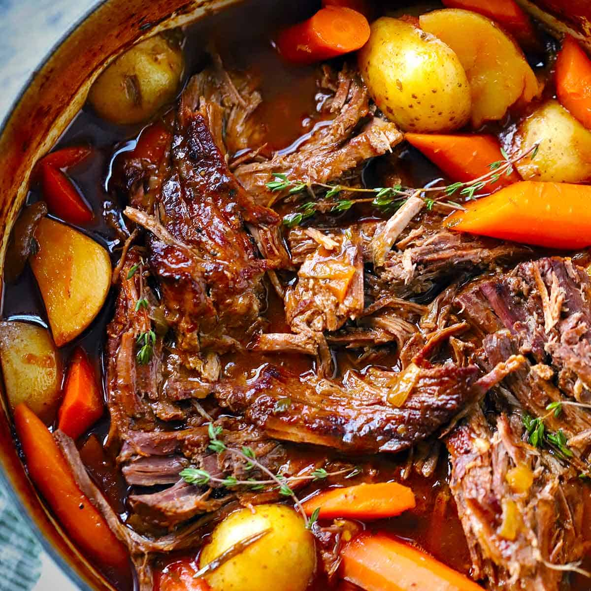

Mississippi Pot Roast

Description
A simple pot roast bursting with flavor and a hint of spice.
Ingredients
- 1 Chuck Roast
- 1 Packet of Ranch Dressing Mix
- 1 Packet of Au Jus Gravy Mix
- 6-7 Pepperoncini Peppers
- 1 Stick of Butter
Steps
- Place your chuck roast at the bottom of your crockpot.
- Sprinkle your two mixes atop the chuck roast.
- Place your peppers and butter on top of your now-seasoned roast.
- Cook on low for 8 hours.
- Shred the roast and enjoy.